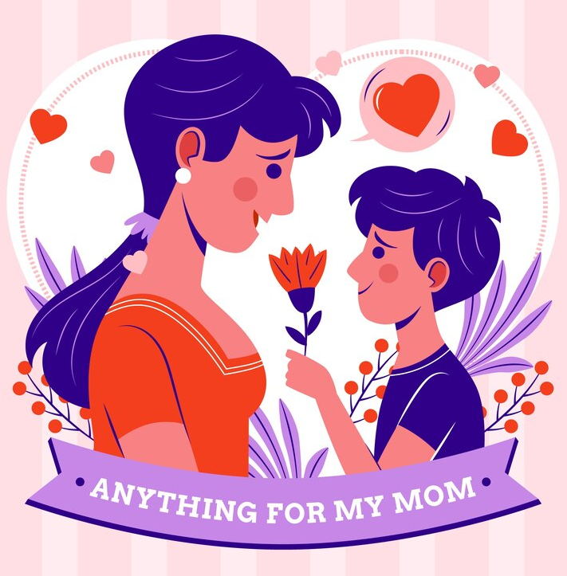

"Mother's roles in their children's life."
Mother as a Best Friend
A mother is the first best friend of her child who instantly forms a special bond with the child just
after his/her birth.She understands all the needs of her children and always tries to fulfill them.
After birth, a child finds his mom as the first friend who plays with him along
with extra care and nourishment. She interacts with her child as a friend and keeps
watching all her child's activities.A mother never feels tired while playing with her child and always
fulfills all his demands without thinking of her. A mother is like an angel for her child.
Mother as a Mentor
A mother is not just a first best friend of a child but also his/her mentor who always supports
and guides her children to achieve all the success in life. A great mentor is one who always
teaches you what is right and what is wrong. A mentor not only supports you but also becomes
strict with you when required. And we all can see these traits in our mothers.
Without any expectation, a mother keeps on working for the betterment of her child. She plays
all roles including mom like a mentor, a teacher, a friend, a caretaker.
She loves her child more than any other thing in this world but sometimes she becomes little strict
towards her child for making him capable to fight with different circumstances comes in life.
Mother gives us that power with which we become able to accept them and get success.
Mother as a Caretaker
No one can care for us as a mother does. She selflessly takes care of her child since the day he is born.
She knows all the needs of her child and can do anything to fulfill them. She is always there for her
children. Whenever we get sick or ill, It is our mother who takes care of us without concern about her
health. For a mother, the well being of her children is the utmost important, and she always ensures that
her children remain safe and protected wherever they are.
A mother provides all the comfort to her child. It is the mother who makes the home cheerful and safe for
children. She is like a superwoman who can manage both household work and her responsibilities towards her
children. Talking about my mother, she is adorable and compassionate. She loves all my friends and me.
Whenever I get sick, she gets concerned about me. She always takes care of my health and my needs.
I love her the most and cannot imagine my life without her.
Mother as a Special Person of Our Life

After God, it is our mother who has the most special place in our hearts and our lives. Since the birth of a
child, a mother forms a precious and special bond with him. Without thinking about herself, she thinks about
her child and his happiness. She works day and night for her children so that she can make them happy.
Motherhood is an integral part of a woman's life, and she selflessly gives her best to it.
A newborn child recognizes her mother from her unique fragrance. And before we start speaking, our mother
understands our needs through our actions. This is all because a mother and a child share a special bond,
which cannot be described in words. All a mother wants is the betterment of her child and to achieve that,
sometimes she supports her child and sometimes becomes strict with him. But her intentions are always pure
and honest. She always wants the best for us, and she does everything to give us the best.